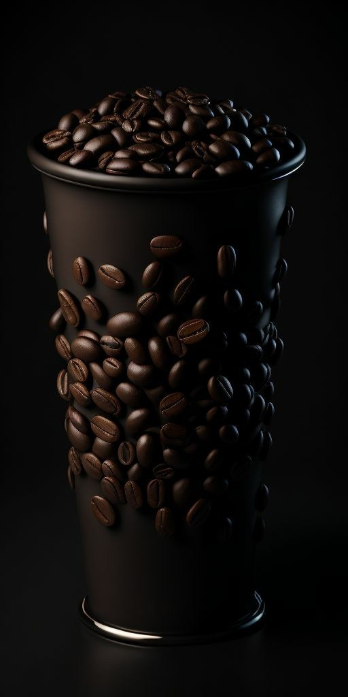

Welcome to The Haven Cafe and Bakery, a new culinary gem nestled in the heart of Nairobi! At The Haven, we've created more than just a cafe; we've crafted an oasis where flavors dance, aromas enchant, and every bite tells a story. Our journey began with a simple passion: to bring warmth, comfort, and exceptional taste to this vibrant city. Step into our cozy haven and discover a place where each cup of coffee is brewed with love, every pastry is a work of art, and every moment is a celebration of good food and great company. Whether you're seeking a quiet retreat from the bustling city or a gathering place to create lasting memories, The Haven Cafe and Bakery welcomes you with open arms and a promise: every visit will feel like coming home.
our coffee is freshly ground with the best coffee seeds. Simply the best for the best!
Why The Haven Way!
